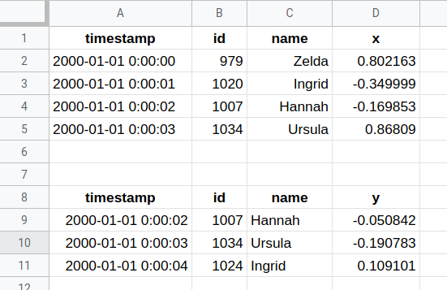

Data Ingestion – Tabular Formats¶
Tidy datasets are all alike, but every messy dataset is messy in its own way.
Hadley Wickham (cf. Leo Tolstoy)
# Tidying up
students = pl.read_csv("data/students-scores.csv")
students
| Last Name | First Name | 4th Grade | 5th Grade | 6th Grade |
|---|---|---|---|---|
| str | str | str | str | str |
| "Johnson" | "Mia" | "A" | "B+" | "A-" |
| "Lopez" | "Liam" | "B" | "B" | "A+" |
| "Lee" | "Isabella" | "C" | "C-" | "B-" |
| "Fisher" | "Mason" | "B" | "B-" | "C+" |
| "Gupta" | "Olivia" | "B" | "A+" | "A" |
| "Robinson" | "Sophia" | "A+" | "B-" | "A" |
# Massage the DataFrame
to_num = {'A+': 4.3, 'A': 4, 'A-': 3.7,
'B+': 3.3, 'B': 3, 'B-': 2.7,
'C+': 2.3, 'C': 2, 'C-': 1.7}
df = (students.with_columns(
pl.col("4th Grade").replace(to_num, default=None),
pl.col("5th Grade").replace(to_num, default=None),
pl.col("6th Grade").replace(to_num, default=None)
)
.drop(["First Name", "Last Name"])
.transpose(include_header=False,
column_names=students["Last Name"])
)
df
| Johnson | Lopez | Lee | Fisher | Gupta | Robinson |
|---|---|---|---|---|---|
| f64 | f64 | f64 | f64 | f64 | f64 |
| 4.0 | 3.0 | 2.0 | 3.0 | 3.0 | 4.3 |
| 3.3 | 3.0 | 1.7 | 2.7 | 4.3 | 2.7 |
| 3.7 | 4.3 | 2.7 | 2.3 | 4.0 | 4.0 |
for student in students["Last Name"]:
plt.plot(["4th", "5th", "6th"], df[student], label=student)
plt.legend(loc="upper right", bbox_to_anchor=(1.3, .80));
plt.title("Student score by year");
![No description has been provided for this image]()
CSV¶
Delimited text files, especially comma-separated-value files, are ubiquitous. These contain multiple values on each line, and separate those values with some semi-reserved character, such as a comma. Delimited files are commonly used to transport data between other tabular representations
Sanity Checks¶
Suppose you have just received a medium sized CSV file, and you want to make a quick sanity check on it. At this stage, you are concerned about whether the file is formatted correctly at all. We can try to read the file using, for example, Pandas and Polars, and we see fairly helpful errors.
# Use try/except to avoid full traceback in example
try:
pd.read_csv('data/big-random.csv')
except Exception as err:
print_err(err)
ParserError Error tokenizing data. C error: Expected 6 fields in line 75, saw 8
try:
pl.read_csv('data/big-random.csv')
except Exception as err:
print_err(err)
ComputeError found more fields than defined in 'Schema' Consider setting 'truncate_ragged_lines=True'.
%%bash
# What is the general size/shape of this file?
wc data/big-random.csv
100000 100000 4335846 data/big-random.csv
%%bash
cat data/big-random.csv |
tr -d -c ',\n' | # remove everything not comma or newline
awk '{ print length; }' | # print the length of trimmed line
sort | # sort all those lengths
uniq -c # histogram of lengths
46 3
99909 5
45 7
%%bash
grep -C1 -nP '^([^,]+,){7}' data/big-random.csv | head -11
74-squarcerai,45,quiescenze,12,scuoieremo,70 75:fantasmagorici,28,immischiavate,44,schiavizzammo,97,sfilzarono,49 76-interagiste,50,repentagli,72,attendato,95 -- 712-resettando,58,strisciato,46,insaldai,62 713:aspirasse,15,imbozzimatrici,70,incanalante,93,succhieremo,41 714-saccarometriche,18,stremaste,12,hindi,19 -- 8096-squincio,16,biascicona,93,solisti,70 8097:rinegoziante,50,circoncidiamo,83,stringavate,79,stipularono,34 8098-disaeriamo,94,sfiorisce,37,mesterebbe,46
import io
buff = io.StringIO()
for line in open('data/big-random.csv'):
if line.count(",") == 5:
buff.write(line)
buff.seek(0)
pl.read_csv(buff, has_header=False)
| column_1 | column_2 | column_3 | column_4 | column_5 | column_6 |
|---|---|---|---|---|---|
| str | i64 | str | i64 | str | i64 |
| "infilaste" | 21 | "esemplava" | 15 | "stabaccavo" | 73 |
| "abbadaste" | 50 | "enartrosi" | 85 | "iella" | 54 |
| "frustulo" | 77 | "temporale" | 83 | "scoppianti" | 91 |
| "gavocciolo" | 84 | "postelegrafiche" | 93 | "inglesizzanti" | 63 |
| "svani" | 92 | "spiombasti" | 99 | "aderisce" | 74 |
| … | … | … | … | … | … |
| "rattralciassi" | 12 | "riflessogeni" | 65 | "rinvanghiate" | 90 |
| "notareschi" | 60 | "paganico" | 64 | "esecutavamo" | 20 |
| "rispranghiamo" | 11 | "schioccano" | 44 | "imbozzarono" | 80 |
| "compone" | 85 | "disfronderebbe" | 19 | "vaporizzavo" | 54 |
| "ritardata" | 29 | "scordare" | 43 | "appuntirebbe" | 24 |
The Good, The Bad, and The Textual Data¶
Textual data files have advantages and disadvantages. Delimited files use a delimiter, as the name suggests, while fixed width files use specific offsets. Let's discuss some advantages and disadvantages.
The Bad
Columns in delimited or flat files do not carry a data type, being simply text values. Many tools will (optionally) make guesses about the data type, but these are subject to pitfalls. Even where the tools accurately guess the broad type category they cannot guess the specific bit lengths desired.
%%bash
cat data/parts.fwf
Part_No Description Maker Price (USD) 12345 Wankle rotary engine Acme Corporation 555.55 67890 Sousaphone Marching Inc. 333.33 2468 Feather Duster Sweeps Bros 22.22 A9922 Area 51 metal fragment No Such Agency 9999.99
Reading this with Pandas correctly infers the intended column positions for the fields.
df = pd.read_fwf('data/parts.fwf', nrows=3)
df
| Part_No | Description | Maker | Price (USD) | |
|---|---|---|---|---|
| 0 | 12345 | Wankle rotary engine | Acme Corporation | 555.55 |
| 1 | 67890 | Sousaphone | Marching Inc. | 333.33 |
| 2 | 2468 | Feather Duster | Sweeps Bros | 22.22 |
df.dtypes
Part_No int64 Description object Maker object Price (USD) float64 dtype: object
df = pd.read_fwf('data/parts.fwf')
df
| Part_No | Description | Maker | Price (USD) | |
|---|---|---|---|---|
| 0 | 12345 | Wankle rotary engine | Acme Corporation | 555.55 |
| 1 | 67890 | Sousaphone | Marching Inc. | 333.33 |
| 2 | 2468 | Feather Duster | Sweeps Bros | 22.22 |
| 3 | A9922 | Area 51 metal fragment | No Such Agency | 9999.99 |
df.dtypes # type of `Part_No` changed
Part_No object Description object Maker object Price (USD) float64 dtype: object
%%bash
# Notice many date formats
cat data/parts.tsv
Part_No Description Date Price (USD) 12345 Wankle rotary 2020-04-12T15:53:21 555.55 67890 Sousaphone April 12, 2020 333.33 2468 Feather Duster 4/12/2020 22.22 A9922 Area 51 metal 04/12/20 9999.99
parts = pd.read_csv('data/parts.tsv', sep='\t')
# Let Pandas make guesses for each row; VERY SLOW for large tables
parts['Date'] = pd.to_datetime(parts.Date, format="mixed").dt.date
parts
| Part_No | Description | Date | Price (USD) | |
|---|---|---|---|---|
| 0 | 12345 | Wankle rotary | 2020-04-12 | 555.55 |
| 1 | 67890 | Sousaphone | 2020-04-12 | 333.33 |
| 2 | 2468 | Feather Duster | 2020-04-12 | 22.22 |
| 3 | A9922 | Area 51 metal | 2020-04-12 | 9999.99 |
The Good
The biggest strength of delimited and fixed-width formats is the ubiquity of tools to read and write them. Every dataframe and array library, across every programming language, handles them. Every spreadsheet program imports and exports as CSV. Every RDBMS imports and exports as CSV. Most programming text editors have facilities to make editing CSV easier.
Spreadsheets Considered Harmful¶
- Non-enforced field/column identity
- Computational opacity
- Semi-tabular data
- Non-contiguous data
- Invisible data and data type discrepancies
- User interface as attractive nuisance
Computational opacity¶
In a "regular" computer program, the flow of computation is relatively straightforward. In spreadsheets, computation is hidden within a non-obvious flow among many cells, across many sheets, and the distinction between computed versus observed data is greatly obscured.

pd.read_excel('data/Excel-Pitfalls.xlsx',
sheet_name="Dask Sample", engine="openpyxl")
| timestamp | id | name | x | |
|---|---|---|---|---|
| 0 | 2000-01-01 00:00:00 | 979 | Zelda | 0.802163 |
| 1 | 2000-01-01 0:00:01 | 1019.5 | Ingrid | -0.349999 |
| 2 | 2000-01-01 00:00:02 | 1007 | Hannah | -0.169853 |
| 3 | 2000-01-01 00:00:03 | 1034 | Ursula | 0.86809 |
| 4 | NaN | NaN | NaN | |
| 5 | NaN | NaN | NaN | NaN |
| 6 | timestamp | id | name | y |
| 7 | 2000-01-01 00:00:02 | 1007 | Hannah | -0.050842 |
| 8 | 2000-01-01 00:00:03 | 1034 | Ursula | -0.190783 |
| 9 | 2000-01-01 00:00:04 | 1024 | Ingrid | 0.109101 |
df1 = pd.read_excel('data/Excel-Pitfalls.xlsx',
nrows=5, dtype=object, engine="openpyxl")
df1.loc[:2] # Just look at first few rows
| timestamp | id | name | x | |
|---|---|---|---|---|
| 0 | 2000-01-01 00:00:00 | 979 | Zelda | 0.802163 |
| 1 | 2000-01-01 0:00:01 | 1019.5 | Ingrid | -0.349999 |
| 2 | 2000-01-01 00:00:02 | 1007 | Hannah | -0.169853 |
pd.read_excel('data/Excel-Pitfalls.xlsx', skiprows=7, engine="openpyxl")
| timestamp | id | name | y | |
|---|---|---|---|---|
| 0 | 2000-01-01 00:00:02 | 1007 | Hannah | -0.050842 |
| 1 | 2000-01-01 00:00:03 | 1034 | Ursula | -0.190783 |
| 2 | 2000-01-01 00:00:04 | 1024 | Ingrid | 0.109101 |
df1.dtypes
timestamp object id object name object x object dtype: object
# Look at the stored data type of each cell
tss = df1.loc[:2, 'timestamp']
for i, ts in enumerate(tss):
print(f"TS {i}: {ts}\t{ts.__class__.__name__}")
TS 0: 2000-01-01 00:00:00 datetime TS 1: 2000-01-01 0:00:01 str TS 2: 2000-01-01 00:00:02 datetime
pd.to_datetime(tss)
0 2000-01-01 00:00:00 1 2000-01-01 00:00:01 2 2000-01-01 00:00:02 Name: timestamp, dtype: datetime64[ns]
# Look at the stored data type of each cell
ids = df1.loc[:3, 'id']
for i, id_ in enumerate(ids):
print(f"id {i}: {id_}\t{id_.__class__.__name__}")
id 0: 979 int id 1: 1019.5 float id 2: 1007 int id 3: 1034 str
df1 = df1.loc[0:3].astype(
{'id': np.uint16,
'name': pd.StringDtype(),
'x': float})
# datetimes require conversion function, not just type
df1['timestamp'] = pd.to_datetime(df1.timestamp)
df1.dtypes
timestamp datetime64[ns] id uint16 name string[python] x float64 dtype: object
df1.set_index('timestamp')
| id | name | x | |
|---|---|---|---|
| timestamp | |||
| 2000-01-01 00:00:00 | 979 | Zelda | 0.802163 |
| 2000-01-01 00:00:01 | 1019 | Ingrid | -0.349999 |
| 2000-01-01 00:00:02 | 1007 | Hannah | -0.169853 |
| 2000-01-01 00:00:03 | 1034 | Ursula | 0.868090 |
Other Formats¶
- Binary columnar data files
- Hierarchical array data
- Single-file RDBMS
- HDF5 (and NetCDF)
- RDBMS
- SQLite
- PostgreSQL
- MariaDB (MySQL)
- Apache Parquet
- Apache Cassandra
- MonetDB
- HDF5 (and NetCDF)
- RDBMS
- SQLite
- PostgreSQL
- MariaDB (MySQL)
- Apache Parquet
- Apache Cassandra
- MonetDB
- HDF5 (and NetCDF)
- RDBMS
- SQLite
- PostgreSQL
- MariaDB (MySQL)
- Apache Parquet
- Apache Cassandra
- MonetDB